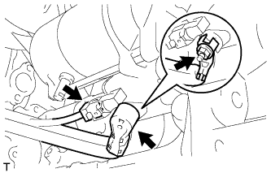
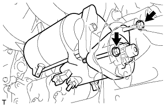
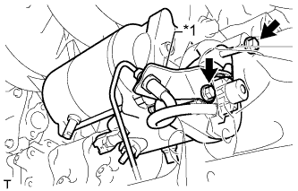

СТАРТЕР (для моделей мощностью 2,0 кВт) > СНЯТИЕ |
| 1. ОТСОЕДИНИТЕ ПРОВОД ОТ ОТРИЦАТЕЛЬНОГО ВЫВОДА АККУМУЛЯТОРНОЙ БАТАРЕИ |
| 2. СНИМИТЕ ЗАДНЮЮ НИЖНЮЮ КРЫШКУ ДВИГАТЕЛЯ В СБОРЕ |
Выверните 4 болта и снимите заднюю защиту картера двигателя.
| 3. СНИМИТЕ ПАТРУБОК ЗАЛИВНОЙ ГОРЛОВИНЫ ТРАНСМИССИОННОГО МАСЛА В СБОРЕ (для моделей с автоматической трансмиссией) |
 |
Снимите щуп проверки уровня масла в трансмиссии.
Отверните 2 болта и снимите маслозаливной патрубок.
Снимите кольцевое уплотнение с маслозаливного патрубка.
| 4. ОТСОЕДИНИТЕ РАБОЧИЙ ЦИЛИНДР СЦЕПЛЕНИЯ В СБОРЕ (для моделей с механической трансмиссией) |
 |
Выверните 2 болта и отсоедините рабочий цилиндр сцепления в сборе.
| 5. СНИМИТЕ СТАРТЕР В СБОРЕ |
|  |
Снимите заглушку контакта.
Отверните гайку и отсоедините жгут проводов стартера.
Отсоедините разъем стартера.
|  |
Для моделей с автоматической трансмиссией:
Выверните 2 болта и снимите стартер.
Для моделей с механической трансмиссией:
|  |
Выверните болт и отсоедините кронштейн гибкого шланга сцепления.
| *1 | Кронштейн гибкого шланга сцепления |
Выверните болт и снимите стартер.